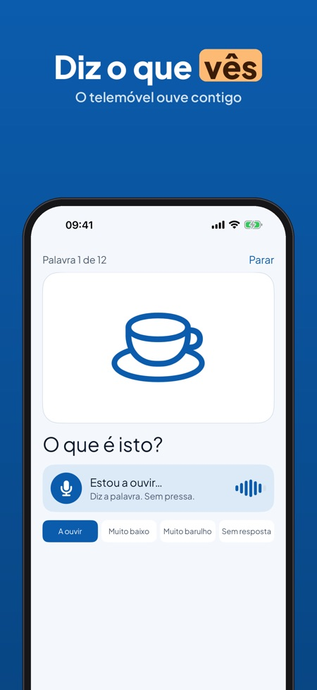
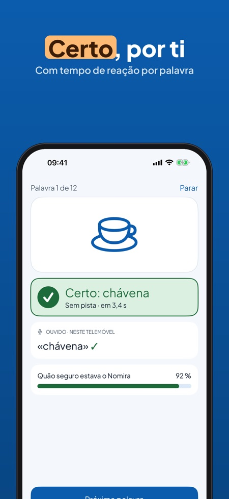
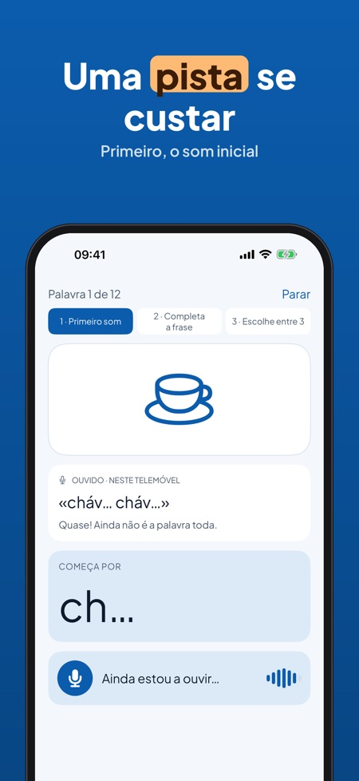

Vê a imagem, diz a palavra. Novidade para as festas: 16 palavras sobre família e estar juntos, abertas sem compra. Vê a imagem, diz a palavra e treina com a família ou o cuidador.



O Nomira ajuda pessoas com afasia a treinar palavras todos os dias. Vês uma imagem e dizes a palavra em voz alta. Onde o iPhone consegue reconhecer a fala no próprio aparelho, o Nomira ouve e mostra se a palavra foi ouvida. Se não sair, aparece uma pista: o primeiro som, uma frase para completar, três palavras à escolha.
O conjunto Cozinha com 15 palavras, a escuta, as três pistas, o tempo de reação, o progresso desta semana e o modo em que marcas tu se correu bem funcionam sem compra. O Nomira Plus é uma compra única: os 10 conjuntos, incluindo verbos, o progresso das semanas anteriores e o relatório semanal em PDF, que envias tu por e-mail, Mensagens ou AirDrop. Sem subscrição, sem anúncios.
O Nomira é uma app de treino: um complemento às sessões com o terapeuta da fala, não um substituto. Não faz diagnósticos nem trata nada. O reconhecimento pode enganar-se; decides sempre tu. A fala é reconhecida no telemóvel; nenhum som é guardado ou enviado. Se o teu iPhone não reconhecer português no aparelho, indicas tu se correu bem.